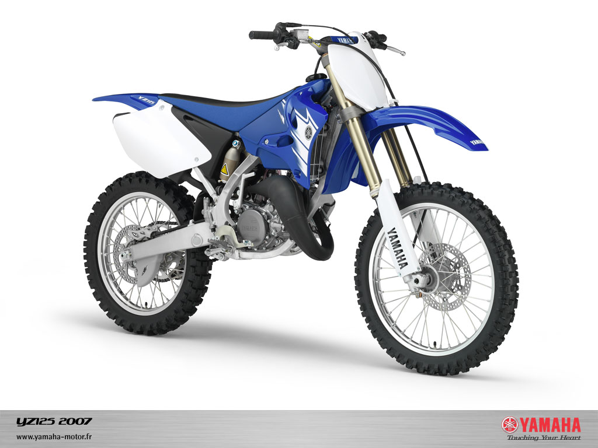
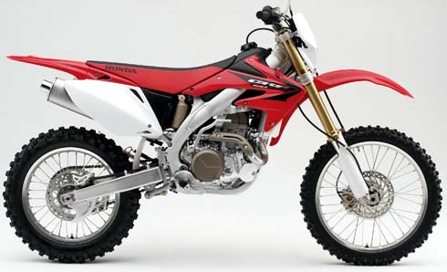

| Marque | Kawasaki | Suzuki | Yamaha | honda |
|---|---|---|---|---|
| categorie 450 | Kx450 | RM-Z450 | YZ450 | CR450 |
| categorie 250 | Kx250 | RM250 | YZ250 | CR250 |
| categorie 125 | Kx125 | RM125 | YZ125 | CR125 |
| categorie <100 | Kx85 | RM85 | YZ85 | CR85 |
Kawasaki
Kx450

DESCRIPTION: Moteur: Mono 4 temps, refroidissement liquide. Cylindrée: 449 cm³. Allumage: Boîtier électronique AC-CDI. Démarreur kick. Boite de vitesses: 5 rapports. Réservoir: 7.2 L . Hauteur de selle: 965 mm. Cadre: Périmétrique en aluminium. Prix: 7795 euros.
Kx250

DESCRIPTION: Moteur: Mono 4 temps, refroidissement liquide. Cylindrée: 249 cm³ Allumage: Boîtier électronique AC-CDI. Démarreur kick. Boite de vitesses: 5 rapports. Réservoir: 7.2 L . Hauteur de selle: 955 mm. Cadre: Périmétrique en aluminium. Prix: 7515 euros.
Kx125

DESCRIPTION: Moteur: Mono 2 temps, refroidissement liquide, avec KIPS. Cylindrée: 124 cm³. Allumage: Boîtier électronique AC-CDI. Démarreur kick. Boite de vitesses: 6 rapports. Réservoir: 8.2 L . Hauteur de selle: 945 mm. Cadre: Périmétrique en acier haute résistance . Prix: 6295 euros.
Kx85

DESCRIPTION: Moteur: Mono 2 temps, refroidissement liquide, avec KIPS. Cylindrée: 84 cm³. Allumage: Boîtier électronique AC-CDI. Démarreur kick. Boite de vitesses: 6 rapports. Réservoir: 5.5 L . Hauteur de selle: 840 mm. Cadre: Périmétrique en acier haute résistance . Prix: 6295 euros.
Kx65

DESCRIPTION: Moteur: Mono 2 temps, refroidissement liquide. Cylindrée: 64 cm³. Allumage: Boîtier électronique AC-CDI. Démarreur kick. Boite de vitesses: 6 rapports. Réservoir: 3.8 L . Hauteur de selle: 760 mm. Cadre: Semi-double berceau acier haute résistance, avec partie arrière gauche amovibe . Prix: 3155 euros.
Suzuki
RM-Z450

DESCRIPTION: Moteur: Monocylindre 4 temps refroidissement liquide. Cylindrée: 449 cm³. Alimentation: 1 carburateur Keihin FCR 40 MX . Démarreur kick. Boite de vitesses: 4 rapports. Réservoir: 7 L . Hauteur de selle: 955 mm. Cadre: Périmétrique en alliage d’aluminium . Prix: 7499 euros.
RM250

DESCRIPTION: Moteur: Monocylindre, 2 temps, refroidissement liquide. Cylindrée: 249 cm³. Alimentation: 1 carburateur Keihin PWK38S . Démarreur kick. Boite de vitesses: 5 rapports. Réservoir: 8 L . Hauteur de selle: 950 mm. Cadre: Acier tubulaire simple berceau dédoublé . Prix: 6399 euros.
RM125

DESCRIPTION: Moteur: Monocylindre, 2 temps, refroidissement liquide. Cylindrée: 124 cm³. Alimentation: 1 carburateur Mikuni TMX38SS . Démarreur kick. Boite de vitesses: 6 rapports. Réservoir: 8 L . Hauteur de selle: 950 mm. Cadre: Simple berceau dédoublé en tube d’acier . Prix: 5999 euros.
RM85

DESCRIPTION: Moteur: Monocylindre, 2 temps, refroidissement liquide. Cylindrée: 84,7 cm³. Alimentation: 1 carburateur Keihin PE28 . Démarreur kick. Boite de vitesses: 6 rapports. Réservoir: 5 L . Hauteur de selle: 850 mm. Cadre: Simple berceau dédoublé en tube d’acier . Prix: 3999 euros.
Yamaha
YZ450

YZ250

DESCRIPTION: Moteur: Monocylindre deux temps avec YPVS. Cylindrée: 249 cm³. Alimentation: 1 carburateur KEIHIN PWK38S (x1) . Démarreur kick. Boite de vitesses: 5 vitesses en prise constante. Réservoir: 8 L . Hauteur de selle: 997 mm. Cadre: Semi-double berceau en aluminium . Prix: 6950 euros.
YZ125

DESCRIPTION: Moteur: Monocylindre deux temps avec YPVS. Cylindrée: 124 cm³. Alimentation: 1 carburateur KEIHIN PWK38S (x1) . Démarreur kick. Boite de vitesses: 6 vitesses en prise constante. Réservoir: 8 L . Hauteur de selle: 998 mm. Cadre: Semi-double berceau en aluminium. Prix: 6290 euros.
YZ85

DESCRIPTION: Moteur: Monocylindre 2 temps, admission par clapets. Cylindrée: 84 cm³. Alimentation: 1 carburateur KEIHIN PWK28 . Démarreur kick. Boite de vitesses: 6 vitesses en prise constante. Réservoir: 5 L . Hauteur de selle: 864 mm. Cadre: Semi-double berceau . Prix: 3999 euros.
Honda
CR450
DESCRIPTION: Moteur: Monocylindre quatre temps, simple ACT, refroidissement liquide. Cylindrée: 449 cm³. Alimentation: 1 carburateur Keihin FCR ø 41 mm à boisseau plat . Démarreur kick. Boite de vitesses: 6 vitesses. Réservoir: 7,2 L . Hauteur de selle: 955 mm. Cadre: Double poutre, simple berceau dédoublé en aluminium . Prix: 3999 euros.
CR250

DESCRIPTION: Moteur: Monocylindre quatre temps, simple ACT, refroidissement liquide. Cylindrée: 249.4 cm³. Alimentation: 1 carburateur Keihin ø 40 mm à boisseau plat et TPS . Démarreur kick. Boite de vitesses: 6 vitesses. Réservoir: 7,3 L . Hauteur de selle: 965 mm. Cadre: Double poutre, simple berceau dédoublé en aluminium . Prix: 3999 euros.
CR125

DESCRIPTION: Moteur: Monocylindre 2 temps à refroidissement liquide. Cylindrée: 124.8 cm³. Alimentation: 1 carburateur Mikuni TMX de 38 mm à boisseau plat et TPS. Démarreur kick. Boite de vitesses: 6 vitesses. Réservoir: 7,7 L . Hauteur de selle: 954 mm. Cadre: Double poutre, simple berceau dédoublé en aluminium . Prix: 3999 euros.
CR85

DESCRIPTION: Moteur: Monocylindre 2 temps à refroidissement liquide. Cylindrée: 84.7 cm³. Alimentation: 1 carburateur Keihin PWK de 28 mm à boisseau plat . Démarreur kick. Boite de vitesses: 6 vitesses. Réservoir: 5.3 L . Hauteur de selle: 864 mm. Cadre: Simple berceau dédoublé en acier. Prix: 3999 euros.